In astronomy, a telescope is usually used to focus electromagnetic radiation so that astronomers can observe distant sources by using large effective areas to collect the most light. Among the most famous early observations by a telescope were those performed by Galileo on Jupiter’s moons that helped lead to the demise of the Earth-centred Universe.
The resolution, θ of a telescope depends on its aperture, or mirror/dish diameter, D and the wavelength of the observed light, λ such that:
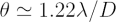
Due to the vast range of wavelengths of in the electromagnetic spectrum (from approximately 10-18 m to 100 km), many different telescope designs are needed.
Radio Telescopes
Radio emission has long wavelengths ranging from 10s to 100s of cm, and thus radio telescope require very large parabolic dishes to achieve good resolution – the best radio telescopes have dishes that are 70-100m (or even larger) in diameter. An alternative method of increasing the resolution of radio observations is to add the signals from many smaller radio telescopes in close proximity to each other. This type of telescope is called an interferometer. Famous radio telescopes include the Parkes 64 metre radio telescope in Australia, the 76 metre Lovell Telescope at Jodrell Bank, and the Arecibo 305 metre dish in Puerto Rico. A very powerful interferometer is the Very Large Array in New Mexico (VLA).
|
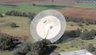
The 64m Parkes Telescope.
Credit: Stuart Duff, CSIRO (used with permission) |
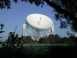
The 76m Lovell Telescope.
Credit: A.Holloway, University of Manchester |
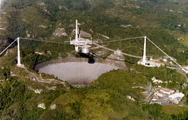
The 305m Arecibo Telescope.
Credit: Courtesy of the NAIC - Arecibo Observatory, a facility of the NSF |
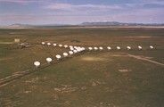
The Very Large Array in New Mexico.
Credit: Image courtesy of NRAO/AUI |
Optical/Infrared Telescopes
At optical/infrared wavelengths, telescopes usually comprise of a parabolic mirror and focus the light to a detector for spectroscopy or imaging. Famous optical telescopes include the Hubble Space Telescope (HST), the Keck 10m telescopes and the European Southern Observatory’s Very Large Telescope (VLT).
|
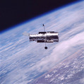
The Hubble Space Telescope.
Credit: NASA/STScI |
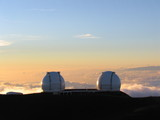
The two Keck telescopes.
Credit: W.M. Keck Observatory |
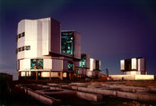 |
Millimetre telescopes
| At millimetre wavelengths, the Atacama Large Millimetre Array (ALMA) is under construction in Chile at high altitudes. ALMA is an interferometer that will consist of 50 12m dishes. |
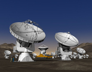
The Atacama Large Millimitre Array.
Credit: ESO |
X-ray telescopes
| Chandra is an example of an X-ray telescope. As X-ray radiation cannot penetrate the Earth’s atmosphere (luckily for us!), X-ray telescopes need to be situated above the Earth’s atmosphere to operate successfully. |
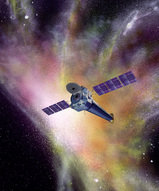
The Chandra X-ray telescope.
Credit: NASA/CXC/SAO |
Gamma-ray telescopes
| The Gamma-ray Large Area Space Telescope (GLAST) is a gamma-ray telescope that also operates in orbit. Gamma-ray emission is also absorbed by the Earth’s atmosphere. |
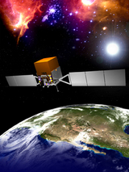 |